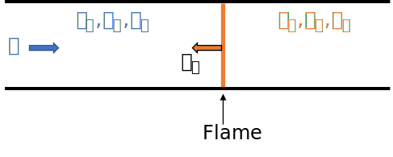

Assignment 3: Combustor Design¶
Introduction¶
The global desire to reduce greenhouse gas emissions is the main reason for the interest in the use of hydrogen for power generation. Although hydrogen shows to be a promising solution, there are many challenges that need to be solved. One of the challenges focuses on the use of hydrogen as a fuel in gas turbines.
In gas turbines hydrogen could replace natural gas as a fuel in the combustor. Unfortunately, this is accompanied with a technical challenge which deals with an important property in premixed combustion: the flame speed. The flame speed of hydrogen is an order of magnitude higher than natural gas due to the highly reactive nature of hydrogen. As a result a hydrogen flame is more prone to flashback than a natural gas flame.
Flame flashback is the undesired upstream propagation of a flame into the premix section of a combustor. Flashback occurs when the flame speed is higher than the velocity of the incoming fresh mixture. This could cause severe equipment damage and turbine shutdown. Adjustments to traditional combustors are required in order to guarantee safe operation when using hydrogen as fuel.
To this end the students are asked to investigate the use of hydrogen, natural gas and a blend thereof in gas turbines. The first part will focus on the impact of the different fuels on the combustor geometry. Finally, we will have a closer look at the influence of different fuels on the \(CO_2\) and \(NO_x\) emissions. For simplicty, it is assumed that natural gas consists purely of methane (\(CH_4\)).
Tasks¶
Diameter of the combustor¶
A gas turbine has a power output of 100 MW. The combustion section consists of 8 can combustors. Each can combustor is, for the sake of simplicty, represented by a tube with a diameter \(D\).
The inlet temperature \(T_2\) of the compressor is 293 K and the inlet pressure \(p_2\) is 101325 Pa. To prevent damage of the turbine blades a turbine inlet temperature (TIT) of 1800 K is desired. Furthermore, assume that the specific heat of the fluid is constant through the compressor, i.e. specific heat capacity \(c_{p,c}\)=1.4 and a heat capacity ratio \(\gamma_c\)=1.4. The polytropic efficiency of the compressor and turbine are 0.90 and 0.85, respectively.
The pressure ratio over the compressor will depend on your studentID:
PR = 10 if (numpy.mod(studentID, 2) + 1) == 1
PR = 20 if (numpy.mod(studentID, 2) + 1) == 2
Assume the TIT to be equal to the temperature of the flame inside the combustor. The flame temperature depends on the equivalence ratio (\(\phi\)), the hydrogen volume percentage of the fuel (\(H_2\%\)) and the combustor inlet temperature and pressure. For now consider the fuel to consist of pure natural gas (\(H_2\%=0\)). Note that the equivalence ratio is given by:
1. Calculate the inlet temperature \(T_3\) and inlet pressure \(p_3\) of the combustor and determine the required equivalence ratio (adjust PART A and PART B and run the code), so that the TIT specification is met.
Inside the combustor the flow is turbulent. Turbulence causes an increase in the flame speed, so that the turbulent flame speed \(S_T \approx 10 S_L\).
2. With the equivalence ratio determined in the previous question, calculate the total mass flow rate (\(\dot{m}_{tot}\)) through the gas turbine and the maximal diameter \(D\) of a single combustor tube, so that flashback is prevented. Adjust PART A, PART B, PART C and PART D in the code and run it again. Report the steps you have taken.
Is there also a minimum diameter? If so, no calculation required, discuss what could be the reason for the necessity of a minimal diameter of the combustor tube.
The combustion of methane is represented by the reaction: \(CH_4 + 2 (O_2 + 3.76 N_2) \rightarrow CO_2 + 2 H_2O + 7.52 N_2\)
3. Use the above reaction equation and the definition of \(\phi\) to find the mass flow rate of the fuel \(\dot{m}_{fuel}\).
4. Calculate the total heat input using \(\dot{m}_{fuel}\) and calculate the efficiency of the complete cycle.
5. Repeat tasks 1-4 for a fuel consisting of \(50\%H_2\)/\(50\%CH_4\) and \(100\%H_2\). Discuss the effect of the addition of hydrogen to the fuel on the combustor geometry and cycle performance.
\(CO_2\) and \(NO_x\) emissions¶
6. A gas turbine manufacturer claims that their gas turbines can be fired with a hydrogen content of 30%. Discuss wheter this could be regarded an achievement (use the top plot in Figure 5).
7. Consider an equivalence ratio \(\phi=0.5\). Regarding emissions, discuss the advantages and disadvantages of increasing the hydrogen content of the fuel. Adjust PART A and use Figure 5.
Bonus assignment¶
For simplicty, it was assumed that natural gas does consist of pure methane. In reality, it could be a mix of methane, higher hydrocarbons and nitrogen.
An example is Dutch Natural Gas (DNG), which consists of \(80\%CH_4\), \(5\%C_2H_6\) and \(15\%N_2\).
Repeat tasks 1-4 for a fuel consisting of \(50\%H_2\)/\(50\%DNG\).
Hint1: Nitrogen does not participate in the reaction.
Hint2: This requires more adjustment of the code than just PARTS A, B, C, D.
Code¶
Two properties of importance in this assignment are the laminar flame speed \(S_L\) and the adiabtic flame temperature \(T_{ad}\) of a mixture. These properties can be determined by solving the equations for continuity, momentum, species and energy in one dimension. Fortunetaly, we do not need to solve these equations by hand, instead a chemical kinetics software (Cantera) is used to solve these equations by running a simulation. The simulation is illustrated in the sketch below. Keep in mind that the simulation can take some time to complete.
For more information about Cantera visit: https://cantera.org/.
For more background information regarding the 1D flame simulation visti: https://cantera.org/science/flames.html

#%% Load required packages
import sys
import cantera as ct
import numpy as np
from matplotlib import pyplot as plt
from matplotlib import cm
#%% Constants
R_gas_mol = 8314 # Universal gas constant [units: J*K^-1*kmol^-1]
R_gas_mass = 287 # universal gas constant [units: J*K^-1*kg^-1]
#%% Start
# Power output of turbine
power_output = 100 # units: MW
power_output*=1e6
# Compressor and turbine polytropic efficiencies
etap_c = 1
etap_t = 1
# Pressure ratio
PR = 10
# Compressor inlet temperature and pressure
T2 = 293.15 # units: K
p2 = 101325 # units: Pa
# Heat capacity ratio of air at T=293.15 K
gam_c = 1.4
# Compressor stage
# Specific heat capacity (heat capacity per unit mass) of mixture in compressor
cp_c = R_gas_mass*gam_c/(gam_c-1)
# cp_c = 1006 # units: J.kg^-1.K^-1
# cv_c = 717 # units: J.kg^-1.K^-1
# Molar mass of species [units: kg*kmol^-1]
M_H = 1.008
M_C = 12.011
M_N = 14.007
M_O = 15.999
M_H2 = M_H*2
M_CH4 = M_C + M_H*4
M_CO2 = M_C + M_O*4
M_O2 = M_O*2
M_N2 = M_N*2
# Define volume fractions of species in air [units: -]
f_O2 = 0.21
f_N2 = 0.79
########## PART A: ADJUST CODE HERE ##########
# Equivalence ratios
phis = [None, None, None] # Set equivalence ratios ranging from 0.4 to 0.8
# Hydrogen percentages
H2_percentages = [None, None, None] # Set hydrogen volume percentages of the fuel ranging from 0 to 100
################# END PART A ##################
# Define colors to make distinction between different mixtures based on hydrogen percentage
colors = cm.rainbow(np.linspace(0, 1, len(H2_percentages)))
#%% Premixed flame object
class mixture_class:
def __init__(self, phi, H2_percentage, T_u=293.15, p_u=101325):
# Color and label for plots
self.color = colors[H2_percentages.index(H2_percentage)]
self.label = str(int(H2_percentage)) + r'$\% H_2$'
# Temperature and pressure of the unburnt mixture
self.T_u = T_u # units: K
self.p_u = p_u # units: Pa
# Equivalence ratio
self.phi = phi
# Hydrogen percentage of fuel
self.H2_percentage = H2_percentage
# DNG percentage of fuel
self.CH4_percentage = 100 - self.H2_percentage
# Volume fractions of fuel
self.f_H2 = self.H2_percentage/100
self.f_CH4 = self.CH4_percentage/100
# Mass densities of fuel species
rho_H2 = M_H2*self.p_u/(self.T_u*R_gas_mol)
rho_CH4 = M_CH4*self.p_u/(self.T_u*R_gas_mol)
# Check if volume fractions of fuel and air are correct
check_air = f_O2 + f_N2
check_fuel = self.f_H2 + self.f_CH4
if check_air == 1.0 and round(check_fuel,3) == 1.0:
pass
else:
sys.exit("fuel or air composition is incorrect!")
if round(check_fuel,3) == 1.0:
pass
else:
sys.exit("fuel composition is incorrect!")
# Definition of the mixture
# 1. Set the reaction mechanism
self.gas = ct.Solution('gri30.cti')
# 2. Define the fuel and air composition
fuel = {'H2':self.f_H2, 'CH4':self.f_CH4}
air = {'N2':f_N2/f_O2, 'O2':1.0}
# 3. Set the equivalence ratio
self.gas.set_equivalence_ratio(phi, fuel, air)
# 4. Set the transport model
self.gas.transport_model= 'Multi'
# 5. Set the unburnt mixture temperature and pressure
self.gas.TP = T_u, p_u
# Unburnt mixture properties
self.h_u = self.gas.enthalpy_mass # units: J.kg^-1
self.cp_u = self.gas.cp_mass # units: J*K^-1*kg^-1
self.cv_u = self.gas.cv_mass # units: J*K^-1*kg^-1
self.rho_u = self.gas.density_mass # units: kg.m^-3
self.rho_u_H2 = rho_H2 # units: kg.m^-3
self.rho_u_CH4 = rho_CH4 # units: kg.m^-3
self.mu_u = self.gas.viscosity # Pa.s
self.nu_u = self.mu_u/self.rho_u # units: m^2.s^-1
self.lambda_u= self.gas.thermal_conductivity # units: W.m^-1.K^-1
self.alpha_u = self.lambda_u/(self.rho_u*self.cp_u) # units: m^2.s^-1
def solve_equations(self):
# Unburnt molar fractions
self.X_H2 = self.gas["H2"].X[0]
self.X_CH4 = self.gas["CH4"].X[0]
self.X_O2 = self.gas["O2"].X[0]
self.X_N2 = self.gas["N2"].X[0]
# Set domain size (1D)
width = 0.05 # units: m
# Create object for freely-propagating premixed flames
flame = ct.FreeFlame(self.gas, width=width)
# Set the criteria used to refine one domain
flame.set_refine_criteria(ratio=3, slope=0.1, curve=0.1)
# Solve the equations
flame.solve(loglevel=0, auto=True)
# Result 1: Laminar flame speed
self.S_L0 = flame.velocity[0]*100 # units: cm.s^-1
self.S_T = 10*self.S_L0/100 # units: m.s^-1 Rough estimation of the turbulent flame speed
# Result 2: Adiabtaic flame temperature
self.T_ad = self.gas.T
# Burnt mixture properties
self.h_b = self.gas.enthalpy_mass # units: J.kg^-1
self.cp_b = self.gas.cp_mass # units: J*K^-1*kg^-1
self.cv_b = self.gas.cv_mass # units: J*K^-1*kg^-1
self.rho_b = self.gas.density_mass # units: kg.m^-3
self.mu_b = self.gas.viscosity # Pa.s
self.nu_b = self.mu_b/self.rho_b # units: m^2.s^-1
self.lambda_b = self.gas.thermal_conductivity # units: W.m^-1.K^-1
self.alpha_b = self.lambda_b/(self.rho_b*self.cp_b) # units: m^2.s^-1
# Burnt mixture molar fractions
self.X_CO2 = self.gas["CO2"].X[0]
self.X_NO = self.gas["NO"].X[0]
self.X_NO2 = self.gas["NO2"].X[0]
#%% Function to retrieve the LHV of different kind of fuels
def heating_value(fuel):
""" Returns the LHV and HHV for the specified fuel """
T_u = 293.15
p_u = 101325
gas1 = ct.Solution('gri30.cti')
gas1.TP = T_u, p_u
gas1.set_equivalence_ratio(1.0, fuel, 'O2:1.0')
h1 = gas1.enthalpy_mass
Y_fuel = gas1[fuel].Y[0]
# complete combustion products
Y_products = {'CO2': gas1.elemental_mole_fraction('C'),
'H2O': 0.5 * gas1.elemental_mole_fraction('H'),
'N2': 0.5 * gas1.elemental_mole_fraction('N')}
gas1.TPX = None, None, Y_products
h2 = gas1.enthalpy_mass
LHV = -(h2-h1)/Y_fuel
return LHV
# Lower Heating Values of well-known combustion fuels
LHV_H2 = heating_value('H2')
LHV_CH4 = heating_value('CH4')
LHV_C2H6 = heating_value('C2H6')
#%% Create list of flame objects for multiple mixtures depending on the equivalence ratio
# and the percentage of hydrogen in the fuel (volume based)
# Initialize list for flame objects
mixtures = []
# Create flame objects and start simulations
for phi in phis:
for H2_percentage in H2_percentages:
########## PART B: ADJUST CODE HERE ##########
# Compressor stage
# Temperature after compressor stage
T3 = None # units: K
p3 = None # units: Pa
# Combustor inlet temperature in K and pressure in Pa
T_u = T3 # units: K
p_u = p3 # units: Pa
################# END PART B ##################
# Combustor stage
# Define unburnt mixture that goes into the combustor
mixture = mixture_class(phi, H2_percentage, T_u, p_u)
# Solve equations and obtain burnt mixture properties
mixture.solve_equations()
# Append the mixture (with unburnt and burnt properties) to list of mixtures
mixtures.append(mixture)
# Turbine stage
# Heat capacity ratio of mixture in turbine
gam_t = mixture.cp_b/mixture.cv_b
# Turbine inlet temperature
T4 = mixture.T_ad
########## PART C: ADJUST CODE HERE ##########
# Turbine outlet temperature
T5 = None
################# END PART C ##################
print('mixture solved: phi=' + str(phi) + ', H2%=' + str(H2_percentage))
#%% Plots A: Laminar flame speed/adiabatic flame temperture vs equivalence ratio
plt.close('all')
# Plot parameters
fontsize = 12
marker = 'o'
markersize = 8
linewidth = 1
linestyle = 'None'
# Figure 1: Laminar flame speed vs equivalence ratio
fig1, ax1 = plt.subplots()
ax1.set_xlabel(r'$\phi$ [-]', fontsize=fontsize)
ax1.set_ylabel(r'$S_L$ [cm.s$^{-1}$]', fontsize=fontsize)
ax1.set_xlim(0.3, 1.1)
ax1.set_ylim(0, 250)
ax1.set_title('Laminar flame speed vs. equivalence ratio \n $T_u=$' + str(round(T_u,2)) + ' K, $p_u$=' + str(p_u*1e-5) + ' bar')
ax1.grid()
# Figure 2: Adiabatic flame temperature vs equivalence ratio
fig2, ax2 = plt.subplots()
ax2.set_xlabel(r'$\phi$ [-]', fontsize=fontsize)
ax2.set_ylabel(r'$T_{ad}$ [K]', fontsize=fontsize)
ax2.set_xlim(0.3, 1.1)
ax2.set_ylim(1200, 2800)
ax2.grid()
ax2.set_title('Adiabtic flame temperature vs. equivalence ratio \n $T_u=$' + str(round(T_u,2)) + ' K, $p_u$=' + str(p_u*1e-5) + ' bar')
# Initialize list for laminar flame speeds
S_L0_lists = [[] for i in range(len(H2_percentages))]
# Initialize list for adiabatic flame temperatures
T_ad_lists = [[] for i in range(len(H2_percentages))]
# Fill Figure 1 and 2
for mixture in mixtures:
index = H2_percentages.index(mixture.H2_percentage)
ax1.plot(mixture.phi, mixture.S_L0, ls=linestyle, marker=marker, ms=markersize, c=mixture.color, label=mixture.label if mixture.phi == phis[0] else "")
ax2.plot(mixture.phi, mixture.T_ad, ls=linestyle, marker=marker, ms=markersize, c=mixture.color, label=mixture.label if mixture.phi == phis[0] else "")
S_L0_lists[index] = np.append(S_L0_lists[index], mixture.S_L0)
T_ad_lists[index] = np.append(T_ad_lists[index], mixture.T_ad)
# Plot polynomial fits to show trends for laminar flame speed and adiabatic flame temperature as a function of the equivalence ratio
if len(phis) == 1:
pass
else:
# Create zipped lists for polynomial fits
lists_zipped = zip(S_L0_lists, T_ad_lists, colors)
# Order of polynomial
poly_order = 3
for (S_L0, T_ad, color) in lists_zipped:
# Create new array for phi
phis_fit = np.linspace(phis[0], phis[-1])
# Plot 4th order polynomial fit for laminar flame speed
coeff_S_L0 = np.polyfit(phis, S_L0, poly_order)
poly_S_L0 = np.poly1d(coeff_S_L0)
S_L0_fit = poly_S_L0(phis_fit)
ax1.plot(phis_fit, S_L0_fit, ls="--", c=color)
# Plot 4th order polynomial fit for adiabatic flame temperature
coeff_T_ad = np.polyfit(phis, T_ad, poly_order)
poly_T_ad = np.poly1d(coeff_T_ad)
T_ad_fit = poly_T_ad(phis_fit)
ax2.plot(phis_fit, T_ad_fit, ls="--", c=color)
#% Plots B: Fuel blend properties and emissions
# Assume constant power (or heat input): heat_input = m_H2_dot*LHV_H2 + m_CH4_dot*LHV_CH4 = 1 (constant)
# Plot parameters
x_ticks = np.linspace(0, 100, 11)
y_ticks = x_ticks
bin_width = 5
# Initialize lists
H2_fraction_heat_input, H2_fraction_mass, CH4_fraction_heat_input, CH4_fraction_mass, CO2_fraction, fuel_energy_mass = ([] for i in range(6))
# Densities of hydrogen and methane of unburnt mixture
rho_H2 = mixture.rho_u_H2
rho_CH4 = mixture.rho_u_CH4
# Reference: Amount of CO2 when H2%=0 (1 mol of CH4 == 1 mol CO2)
Q_CO2_ref = 1 / (rho_CH4*LHV_CH4)
# Hydrogen fraction in the fuel
H2_fraction_volume = np.linspace(0, 1, 21)
# Mixture calculations
for x in H2_fraction_volume:
# Fractions of H2 and CH4 by heat input
H2_part = rho_H2*LHV_H2*x
CH4_part = rho_CH4*LHV_CH4*(1-x)
H2_fraction_heat_input_i = H2_part / (H2_part + CH4_part)
CH4_fraction_heat_input_i = 1 - H2_fraction_heat_input_i
H2_fraction_heat_input = np.append(H2_fraction_heat_input, H2_fraction_heat_input_i)
CH4_fraction_heat_input = np.append(CH4_fraction_heat_input, CH4_fraction_heat_input_i)
# Fraction of CO2 reduction
Q_u_i = 1 / (rho_H2*LHV_H2*x + rho_CH4*LHV_CH4*(1-x))
Q_CH4_i = Q_u_i*(1-x)
Q_CO2_i = Q_CH4_i
CO2_fraction_i = Q_CO2_i/Q_CO2_ref
CO2_fraction = np.append(CO2_fraction, CO2_fraction_i)
# Fractions of H2 and CH4 by mass
H2_part = rho_H2*x
CH4_part = rho_CH4*(1-x)
H2_fraction_mass_i = H2_part / (H2_part + CH4_part)
CH4_fraction_mass_i = 1- H2_fraction_mass_i
H2_fraction_mass = np.append(H2_fraction_mass, H2_fraction_mass_i)
CH4_fraction_mass = np.append(CH4_fraction_mass, CH4_fraction_mass_i)
# Fuel energy content
fuel_energy_mass_i = (H2_fraction_mass_i*LHV_H2 + CH4_fraction_mass_i*LHV_CH4)/1e6 # units: MJ.kg^-1
fuel_energy_mass = np.append(fuel_energy_mass, fuel_energy_mass_i)
# Convert fractions to percentages
CO2_percentage = 100*CO2_fraction
CO2_reduction_percentage = 100 - CO2_percentage
H2_percentage_volume = H2_fraction_volume*100
CH4_percentage_heat_input = CH4_fraction_heat_input*100
H2_percentage_heat_input = H2_fraction_heat_input*100
H2_percentage_mass = 100*H2_fraction_mass
CH4_percentage_mass = 100*CH4_fraction_mass
# Plots
fig3, ax3 = plt.subplots()
line3_0 = ax3.plot(H2_percentage_volume, CH4_percentage_heat_input, marker=marker, color='tab:blue', label=r'$CH_{4}$')
ax3.set_xticks(x_ticks)
ax3.set_yticks(y_ticks)
ax3.set_xlabel(r'$H_{2}$% (by volume)', fontsize=fontsize)
ax3.set_ylabel(r'$CH_{4}$% (by heat input)', fontsize=fontsize, color='tab:blue')
ax3.set_title('Heat input vs. volume percentage for a methane/hydrogen fuel blend')
ax3.grid()
ax3_1 = ax3.twinx()
line3_1 = ax3_1.plot(H2_percentage_volume, H2_percentage_heat_input, marker=marker, color='tab:orange', label=r'$H_{2}$')
ax3_1.set_ylabel(r'$H_{2}$% (by heat input)', fontsize=fontsize, color='tab:orange')
lines3 = line3_0 + line3_1
labels3 = [l.get_label() for l in lines3]
fig4, ax4 = plt.subplots()
ax4.plot(H2_percentage_heat_input, CO2_reduction_percentage, marker=marker)
ax4.set_xticks(x_ticks)
ax4.set_yticks(y_ticks)
ax4.set_xlabel(r'$H_{2}$% (by heat input)', fontsize=fontsize)
ax4.set_ylabel(r'$CO_2$ reduction [%]', fontsize=fontsize)
ax4.set_title(r'$CO_2$ emissions vs. hydrogen/methane fuel blends (heat input %)')
ax4.grid()
fig5, (ax5, ax5_1) = plt.subplots(2)
ax5.plot(H2_percentage_volume, CO2_percentage, marker=marker)
ax5.set_xticks(x_ticks)
ax5.set_yticks(y_ticks)
ax5.set_xlabel(r'$H_{2}$% (by volume)', fontsize=fontsize)
ax5.set_ylabel(r'$CO_2$ emissions [%]', fontsize=fontsize)
ax5.set_title(r'$CO_2$ emissions vs. hydrogen/methane fuel blends (volume %)')
ax5.grid()
for i, mixture in enumerate(mixtures):
if mixture.phi == phis[-1]:
NO_percentage_volume = mixture.X_NO*100
NO2_percentage_volume = mixture.X_NO2*100
ax5_1.bar(mixture.H2_percentage, NO_percentage_volume, bin_width, color='tab:red', label=r'$NO$' if i == 0 else "")
ax5_1.bar(mixture.H2_percentage, NO2_percentage_volume, bin_width, bottom=NO_percentage_volume, color='tab:blue', label=r'$NO_2$' if i == 0 else "")
ax5_1.set_title(r'$NO_x$ emissions for $\phi=$' + str(mixture.phi))
ax5_1.set_xlim(-5, 105)
ax5_1.set_xticks(x_ticks)
ax5_1.set_xlabel(r'$H_{2}$% (by volume)', fontsize=fontsize)
ax5_1.set_ylabel(r'$NO_x$ [%]', fontsize=fontsize)
ax5_1.grid()
fig6, ax6 = plt.subplots()
ax6.plot(H2_percentage_volume, H2_percentage_mass, marker=marker, color='tab:blue', label=r'$H_{2}$')
ax6.plot(H2_percentage_volume, CH4_percentage_mass, marker=marker, color='tab:orange', label=r'$CH_{4}$')
ax6.set_xticks(x_ticks)
ax6.set_yticks(y_ticks)
ax6.set_xlabel(r'$H_{2}$% (by volume)', fontsize=fontsize)
ax6.set_ylabel(r'wt.% (by mass)', fontsize=fontsize)
ax6.set_title(r'Weight vs. volume percentage for hydrogen/methane fuel blends')
ax6.grid()
fig7, ax7 = plt.subplots()
ax7.plot(H2_percentage_volume, fuel_energy_mass, lw=2, marker=marker, color='tab:red')
ax7.set_xticks(x_ticks)
ax7.set_xlabel(r'$H_{2}$% (by volume)', fontsize=fontsize)
ax7.set_ylabel(r'Fuel energy content [MJ.kg$^{-1}$]', fontsize=fontsize)
ax7.set_title(r'Energy content vs. volume percentage for hydrogen/methane fuel blends')
ax7.grid()
# Turn on legends
ax1.legend()
ax2.legend()
ax3.legend(lines3, labels3, loc='center left')
ax5.legend(bbox_to_anchor=(1, 1))
ax5_1.legend(bbox_to_anchor=(1, 1))
ax6.legend(bbox_to_anchor=(1, 1))
# Fix figures layout
fig1.tight_layout()
fig2.tight_layout()
fig3.tight_layout()
fig4.tight_layout()
fig5.tight_layout()
fig6.tight_layout()
fig7.tight_layout()
# Uncomment to save figures as .svg
# fig1.savefig('turbo3_1.svg')
# fig2.savefig('turbo3_2.svg')
# fig3.savefig('turbo3_3.svg')
# fig4.savefig('turbo3_4.svg')
# fig5.savefig('turbo3_5.svg')
# fig6.savefig('turbo3_6.svg')
# fig7.savefig('turbo3_7.svg')
########## PART D: ADJUST CODE HERE ##########
for mixture in mixtures:
# Equivalence of the mixture
phi = mixture.phi
# Density of the unburnt mixture (before entering the combustor)
rho_u = mixture.rho_u # units: kg.s^-1
# Volumtric fractions of hydrogen and methane
f_H2 = mixture.f_H2
f_CH4 = mixture.f_CH4
# Specific heat capacity (heat capacity per unit mass)
cp_t = mixture.cp_b
# Total mass flow rate
m_dot = None # units: kg.s^-1
# Velocity in the combustor
V = mixture.S_T # units: m.s^-1
# Area and diameter of the combustor
A = None # units: m^2
D = None # units: m
# ratio of mass fuel and mass air at stoichiometric conditions
m_f_over_m_a_stoich = None
# Mass flow of the fuel
m_f_dot = None
# Heat input or Heat of combustion
Q = None # units: W
# thermal cycle efficiency
eta_cycle = None
################# END PART D ##################
---------------------------------------------------------------------------
ModuleNotFoundError Traceback (most recent call last)
/tmp/ipykernel_3010/2063189513.py in <module>
1 #%% Load required packages
2 import sys
----> 3 import cantera as ct
4 import numpy as np
5 from matplotlib import pyplot as plt
ModuleNotFoundError: No module named 'cantera'